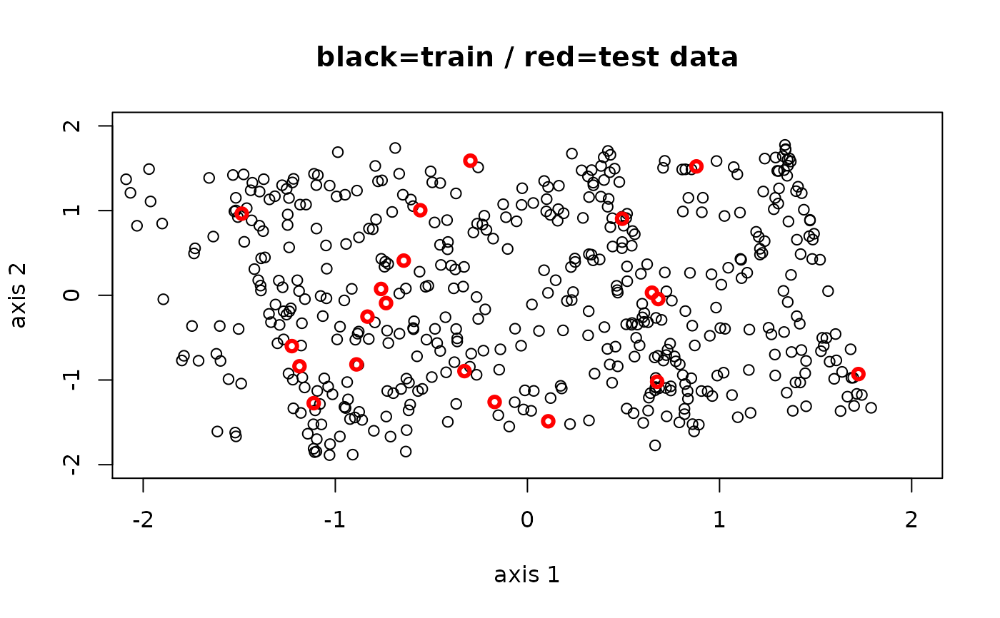

Linear dimensionality reduction methods such as PCA, LPP, or ICA explicitly returns a matrix
for mapping or projection. When we have new data, therefore, we can simply use the mapping provided.
Inputs projection and trfinfo should be brought from original model you trained.
oos.linear(Xnew, projection, trfinfo)
| Xnew | an \((m\times p)\) matrix or data frame whose rows are observations. If a vector is given, it will be considered as an \((1\times p)\) matrix with single observation. |
|---|---|
| projection | a \((p\times ndim)\) projection matrix. |
| trfinfo | a list containing transformation information generated from manifold learning algorithms.
See also |
a named list containing
an \((m\times ndim)\) matrix whose rows are embedded observations.
Kisung You
# \donttest{ ## generate sample data and separate them X = aux.gensamples(n=500) set.seed(46556) idxtest = sample(1:500,20) # 20% of data for testing idxtrain = setdiff(1:500,idxtest) # 80% of data for training Xtrain = X[idxtrain,] Xtest = X[idxtest,] ## run PCA for train data res_train = do.pca(Xtrain,ndim=2,preprocess="whiten") ## perform OOS.LINEAR on new dataset ## note that inputs should be from a given model you trained model.projection = res_train$projection model.trfinfo = res_train$trfinfo res_test = oos.linear(Xtest, model.projection, model.trfinfo) ## let's compare via visualization xx = c(-2,2) # range of axis 1 for compact visualization yy = c(-2,2) # range of axis 2 for compact visualization mm = "black=train / red=test data" # figure title YY = res_test$Ynew # out-of-sample projection for test data opar <- par(no.readonly=TRUE) plot(res_train$Y, type="p", xlim=xx, ylim=yy, main=mm, xlab="axis 1", ylab="axis 2")